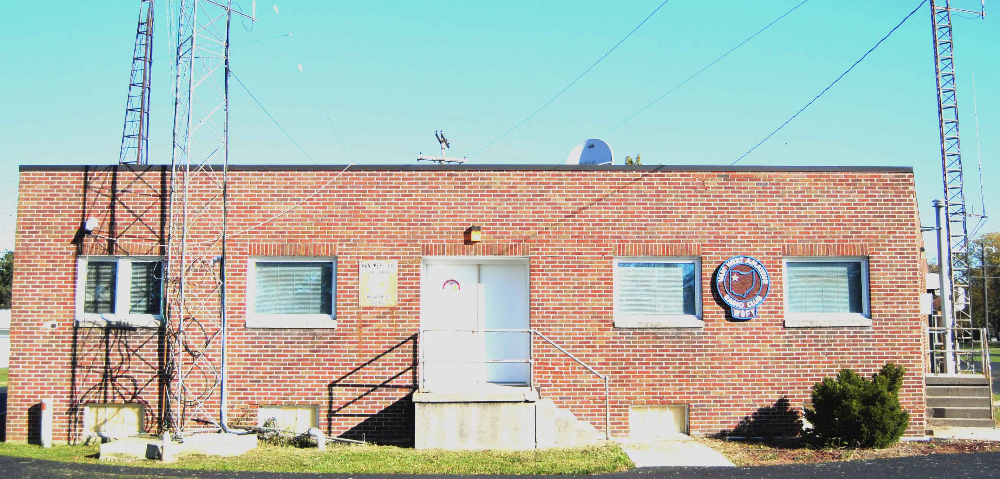

Van Wert Amateur Radio Club, Inc.
Organized 1952 Constitution adopted 1954 ARRL affiliation 1954
Incorporated as a non-profit corporation 1963

Van Wert Amateur Radio Club, Inc.
Organized 1952 Constitution adopted 1954 ARRL
affiliation 1954
Incorporated as a non-profit corporation 1963

Mission Statement
To educate and increase the proficiency of its members concerning scientific advancement and progress in the science of amateur radio communications.
To organize and train licensed radio amateurs capable of maintaining radio communications as a public service during periods of emergency.
To encourage and sponsor experimental activities in radio communications and electronics, to the end that skills and experience gained in amateur radio will further the application of electronics to the benefit of the public at large.
Van Wert Amateur Radio Club, Inc., P.O. Box 602,
Van Wert, OH 45891-0602
Home